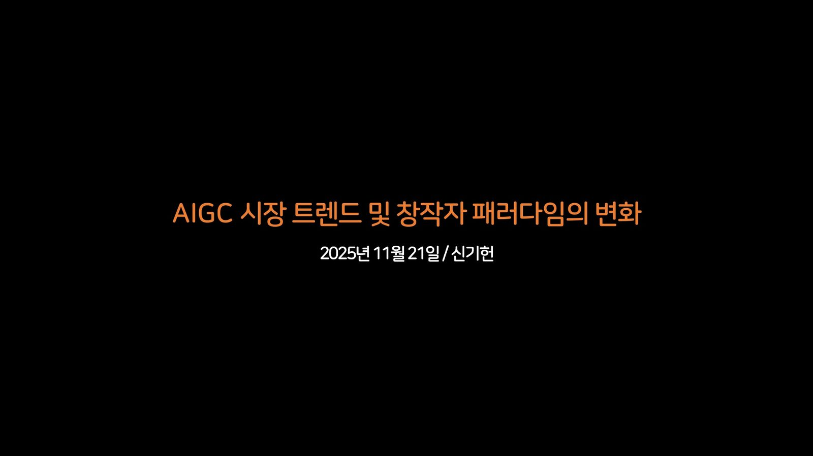

AIGC 시장 트렌드 및 창작자 패러다임의 변화
2025년 11월 21일 발표 자료 전문. 슬라이드 162장을 그날의 순서대로 넘겨 보고, 영상 59편은 발표 때 놓였던 자리 그대로 재생한다.

영상은 발표 중 슬라이드 위에서 재생된 것이다. 원본 파일에 적힌 도형 좌표를 그대로 읽어, 그날 화면에서 영상이 놓였던 자리에 같은 크기로 얹었다. 장표를 누르면 그 자리에서 슬라이드쇼가 열린다.
CHAPTER 01 · 슬라이드 2–22
AI 시대, 실력과 노력의 가치
발표 전체의 철학적 기반을 마련합니다. "AI가 무엇이든 만들어내는 시대에, 인간의 실력과 노력은 여전히 가치가 있는가?"라는 근본적 질문을 던지고, 이 질문에 대한 답을 찾아가는 여정이 바로 이후 5개 챕터의 구조임을 암시합니다.
Freepik 사례 — "무엇이든 생성 가능한 시대?"
- Freepik 사례로 챕터를 연다. "무엇이든 생성 가능한 시대?"를 묻는 자리다.
- 스톡 이미지 플랫폼 Freepik이 자사 저작권이 확보된 스톡 이미지로 AI 모델을 학습시켜 자체 이미지 생성 기능(All-in-One AI Creative Suite)을 제공하는 사례를 소개한다.
- 과거 '디지털 이미지'를 진열하던 것에서, 이제는 다양한 'AI 기반 창작 도구'를 진열하는 것으로 변화했다고 설명한다.
- 좌측에 Freepik 화면 이미지, 우측에 Freepik 영상이 나란히 놓여 텍스트 설명과 시각 증거를 동시에 준다.
003영상 1
004
005
철학적 전환점 — "AI 시대, 창작의 정의를 다시 묻다"
- 부제: "창작 주체에 대한 오랜 전제의 균열"
- 생성형 AI의 등장이 창작을 인간 고유의 것으로 여겨온 전통적 관념에 도전하며, '창작이란 무엇이고 창작자는 누구인가'라는 근본적인 질문을 다시 제기한다고 짚습니다.
- AI가 방대한 데이터를 학습해 인간의 상상을 뛰어넘는 결과물을 만들면서 작품의 진정성과 창작 주체의 경계가 점차 모호해진다는 점을 두 번째 논점으로 둡니다.
- 결국 이 변화가 예술적 창의성을 인간의 고유한 영역으로만 볼 수 없다는 주장으로 이어져, 창작의 미래에 대한 새로운 논의를 촉발한다는 것이 세 번째 논점입니다.
- '창작이란 무엇이고 창작자는 누구인가', '작품의 진정성', '창작 주체의 경계', '인간의 고유한 영역으로만 볼 수 없다는 주장'에 형광 강조가 걸려 있습니다.
006
"예술가는 대체되는가, 아니면 확장되는가?" — 미술 분야
- 좌우 2분할로 미술 분야의 두 사례를 대비합니다.
- 왼쪽은 <Edmond de Belamy>. 프랑스의 AI 아트 그룹 Obvious Collective가 만든 AI 생성 작품이 크리스티 경매에서 약 43만 달러에 판매된 사례입니다.
- 오른쪽은 <Théâtre D'opéra Spatial>. 2022년 게임 기획자 Jason M. Allen이 Midjourney로 만든 작품이 콜로라도 주립 박람회 미술대회에서 1위를 차지한 사례입니다.
- 두 사례 모두 AI가 미술 분야에서 이미 인간과 경쟁하고 있다는 현실을 보여주되, 동시에 인간이 AI를 도구로 사용해 만든 작품이라는 점에서 '대체'보다 '확장'의 가능성을 암시합니다.
007
"창작자는 대체되는가, 아니면 확장되는가?" — 음악 분야
- 세계 최초로 음악 레이블과 계약한 'AI 음악 디자이너' ImOliver 사례를 소개합니다.
- 좌측에 ImOliver 관련 이미지들, 우측에 상세 텍스트가 배치됩니다.
- AI가 단순한 창작 도구를 넘어 인간과 협업하는 '공동 창작자'로 인정받기 시작했다는 것이 첫 번째 논점입니다.
- 2025년 7월 AI 창작자가 미국 인디 레이블 Hallwood Media와 정식 계약을 맺은 것을 대표 사례로 듭니다.
- 이 흐름이 'AI가 음악을 만드는 것'이 아니라 '인간이 AI를 통해 음악을 만든다'는 새로운 창작 철학을 제시한다고 정리합니다.
- 결국 AI 기술은 창작자를 대체하는 것이 아니라 인간의 역할을 비전을 제시하는 디렉터이자 공동 설계자로 확장한다는 결론으로 닫습니다.
- 하단 띠글: 2025년의 음악 산업은 AI가 창작자와 협업하는 새로운 파트너로 부상하는 동시에, 창작자의 정체성을 도용하고 예술의 본질을 위협하는 양면적인 현실을 보여준다고 덧붙입니다.
008
시각적 전환
- Suno의 imoliver 프로필 화면을 전면으로 보여준다. 앞 장 논의의 실물 증거다.
- 팔로워 7.8K, 누적 재생 4.3M. 인디 팝, 팝, 하우스, 소울, 일렉트로닉 태그가 붙어 있다.
- 대표곡 여섯 개가 재생 수와 함께 늘어서 있다. Stone은 3.3M회, 나머지도 10만에서 20만 회대다.
- AI 음악 디자이너라는 말이 추상적 개념이 아니라 실제로 청취자를 가진 계정이라는 것을 숫자로 보여준다.
009
010
"셀럽은 대체되는가, 아니면 확장되는가?" — 엔터테인먼트 분야
- "셀럽은 대체되는가, 아니면 확장되는가?" 엔터테인먼트 분야로 질문을 옮긴다.
- SM엔터테인먼트의 버추얼 아티스트 나이비스(nævis) 사례를 든다.
011
012영상 1
위협의 양면 — 정체성 도용과 생태계 붕괴
- 위협의 한쪽 면이다. "전문가로서의 정체성 위협".
- AI가 생성한 앨범 'Orca'가 영국 포크 뮤지션 Emily Portman의 이름으로 스포티파이에 유통된 사례를 든다. 앨범 크레딧에는 그녀가 연주자, 작곡가로 허위 표기됐다.
- Portman은 "AI가 창작에 쓰이는 것 자체가 문제가 아니라, AI가 사람인 척하는 것이 문제"라고 지적했다.
- 이 사건은 AI 생성 콘텐츠가 별다른 검증 없이 유통되며, 모든 아티스트의 예술적 소유권과 정체성이 언제든 도용될 수 있는 위험을 드러냈다고 정리한다.
- 하단 띠글: AI 기술은 창작자의 정체성을 도용하며 예술의 본질을 위협하는 도구로도 사용된다.
013
014
Suno — AI 음악 생성 플랫폼
- Suno 플랫폼의 탐색 화면 이미지다.
- 누구나 음악을 만들 수 있는 시대의 구체적 증거로 15~17장이 함께 놓인다.
015
016
017영상 1
"'노력의 가치'에 대한 딜레마" — 맥도널드 광고 사례
- 맥도널드 광고 "Take a Trip Through McDonaldland" 영상을 전면으로 재생한다.
- 하단에 유튜브 주소를 함께 적었다. 18~21장이 '노력의 가치' 딜레마를 한 묶음으로 다룬다.
018
019
020영상 1
021
챕터 1 종합 정리 — "AI 기술의 등장에 따른 새로운 창작자 패러다임"
- 챕터 1을 닫으며 패러다임 변화 다섯 가지를 좌우 두 단으로 구조화합니다.
- 1. 인간 수준의 결과물 품질 — 인간의 창작물과 구분이 어려운 높은 품질, 그리고 아이디어 중심의 가치 평가로 전환.
- 2. 창작 패러다임의 전환 — 수개월 걸리던 작업을 수초 만에 완성하는 효율성, '노력=가치'라는 전통적 인식의 약화.
- 3. 멀티모달 AI의 등장 — 텍스트, 이미지, 영상을 넘나드는 표현력의 폭발적 확장.
- 4. 창의적 협업의 가능성 — 복잡한 의도와 맥락을 이해하여 인간과의 협업이 가능해짐.
- 5. 창작 생태계의 완성 — 창작 파이프라인 전체를 통합하는 AI 도구의 진화, 누구나 창작 가능한 통합 환경, 'AI 생성 - 인간 큐레이션' 워크플로우의 현실화.
- 하단에 밑줄로 "최근 AI 기술의 비약적인 발전은 창작 환경을 근본적으로 변화시키고 있음"을 결론으로 답니다.
022
CHAPTER 02 · 슬라이드 23–62
도구를 넘어 새로운 미디어로
1장에서 제기한 "AI는 도구인가?"라는 질문에 대해, "AI는 도구가 아니라 완전히 새로운 매체(미디어)이다"라는 본 발표의 핵심 테제를 제시합니다. 가장 많은 슬라이드(40장)를 할애한 챕터로, 다양한 분야의 사례를 총동원하여 이 주장을 뒷받침합니다.
Showrunner — AI TV 쇼 플랫폼
- Showrunner 플랫폼 영상을 전면으로 재생하며 챕터를 연다.
- 24~29장이 AI TV 쇼 플랫폼을 한 묶음으로 다룬다.
024영상 1
025
026
027
028
029
AI 기반 인터랙티브 콘텐츠
- Hypernatural. AI 기반 상호작용 콘텐츠 플랫폼 화면이다.
- 30~35장이 인터랙티브 콘텐츠 사례를 이어서 보여준다.
030
031
032영상 1
033
034영상 1
035영상 1
이론적 근거 — "AI는 '완전히 새로운 미디어'다"
- 이 발표의 이론적 핵심이 시작되는 자리다. 36~38장이 한 묶음이다.
- Runway CEO Cristóbal Valenzuela의 글 <A New Medium>을 인용한다.
- AI는 더 빠르고 값싼 도구가 아니라 고유한 문법을 지닌 새로운 매체라는 주장이다.
036
037
038
AI 매체로서의 구체적 현상들
- Sora와 그 주변에서 자란 공동 창작 문화를 보여주는 구간(39~45장)이다.
- AI 매체가 개인의 도구를 넘어 사람들이 함께 만드는 문화로 번지는 장면을 화면과 영상으로 잇는다.
039
040
041
042
043영상 2
044영상 1
045영상 4
046영상 1
047영상 1
048
049
050
AI 콘텐츠와의 정서적 교감
- AI가 콘텐츠 생성 도구를 넘어 정서적 관계의 대상이 되는 현상을 다루는 구간(51~62장)이 시작된다.
- Character.ai. AI 캐릭터와 대화하며 관계를 쌓는 플랫폼이다.
051
052
053
054
055
056
057
058
059영상 1
060영상 1
061
062
CHAPTER 03 · 슬라이드 63–84
AI와의 상호작용을 위한 프롬프트
AI라는 새로운 매체를 다루기 위해 필요한 핵심 역량 — "프롬프트 엔지니어링" 능력 — 을 정의하고, 이를 통해 AI 시대의 새로운 창작 프로세스 모델을 제시합니다.
아이데이션 영상 및 이미지
- "아이데이션" 영상을 전면으로 재생한다.
- AI를 활용해 아이디어를 구상하는 과정을 먼저 보여주고 챕터의 논의로 들어간다.
064영상 1
065
"새롭게 요구되는 프롬프트 엔지니어링 능력"
- 장표 전체가 세 문장으로만 이루어진 정의 슬라이드입니다.
- 생성형 AI 시대의 창작자는 '프롬프트'라는 새로운 언어적 도구로 AI를 다루게 된다는 전제를 먼저 둡니다.
- 창작자의 의도와 감성을 언어에 압축하여 설계하는 능력에 따라 전혀 다른 결과물이 생성된다는 문장에 형광 강조가 걸려 있습니다.
- 그래서 언어를 정교하게 다루는 묘사 능력이 새로운 시대의 핵심 창작 기술로 부상한다고 맺습니다.
066
프롬프트 → 시각적 결과의 실제 사례들
- 프롬프트가 어떤 결과를 만드는지 실물로 보여주는 구간(67~73장)이 시작된다.
- Gemini Nano Banana. 모델 포즈, 핑크 BMW, 그린 에일리언 키체인 같은 아주 상세한 묘사가 담긴 실제 프롬프트 텍스트를 결과 이미지와 함께 놓았다.
067
068영상 1
069영상 1
070
071
072
073영상 1
AI 영화 제작 사례 — Dave Clark
- AI 영화 제작 사례 구간(74~78장)이 시작된다.
- Dave Clark의 "My Very First Sora 2 Short Film"을 소개한다.
074
075영상 1
076
077영상 1
078영상 1
핵심 프레임워크 — "제작과 평가의 경계를 넘나드는 비선형 과정"
- 제작과 평가가 갈라지지 않는 3단계 순환을 한 장에 폅니다.
- 1단계. 구상 및 지시 — 인간(Director)이 최초 아이디어와 의도를 명확히 정의하고, 이를 AI가 이해할 수 있는 언어적 설계도로 구체화합니다.
- 2단계. 생성 및 탐색 루프 — AI(Generative Engine)가 프롬프트를 기반으로 무한한 잠재 공간에서 재료를 생성하고 변주하면, 인간(Curator)이 그것을 평가해 의도에 맞는 것을 선택하고 피드백과 프롬프트 수정을 반복합니다.
- 3단계. 통합 및 완성 — 인간(Editor)이 최종 의도에 맞게 확보된 재료를 수정하고 다듬어 완성도를 높입니다.
- 이어지는 두 장(80, 81)은 이 프레임을 어둡게 낮추고 2단계 자리에 결론 문장을 얹습니다.
079
080
081
AI의 창의성에 대한 학술적 논의
- AI의 창의성을 두고 벌어지는 학술적 논의 구간(82~84장)이 시작된다.
- 두 학자의 관점을 좌우로 대비해 놓았다.
082
083
084
CHAPTER 04 · 슬라이드 85–104
프롬프트를 넘어 실시간 워크플로우로
3장에서 정의한 프롬프트 능력을 넘어, AI가 도구 → 동료 → 공동창작자로 진화하는 과정과, 이에 따른 실시간 통합 워크플로우의 구축 방법론을 제시합니다.
Flora AI 워크플로우
- Flora AI(florafauna.ai)의 통합 워크플로우 인터페이스 이미지 구간(86~89장)이다.
- AI 도구가 개별 기능을 넘어 창작 과정 전체를 하나의 작업 흐름으로 묶는 단계에 들어섰음을 화면으로 보여준다.
086
087
088
089
090영상 1
AI의 역할 진화: 도구 → 동료 → 공동창작자
- AI의 역할이 어떻게 옮겨 가는지 세 소제목으로 정리한다. "'도구'를 넘어 '동료'가 된 AI".
- AI, 단순한 도구를 넘어선 대화 상대 — 프롬프트라는 언어적 인터페이스를 통해 AI를 원하는 방향으로 이끄는 능력이 새로운 창작 기술이 되었고, AI를 수동적 도구가 아닌 아이디어를 주고받는 '대화 상대'로 인식할 때 창작의 새로운 가능성이 열린다.
- AI, 창작자의 지치지 않는 동료 — 아이디어 구상 단계에서 수많은 변주를 실시간 제안해 상상력을 자극하고, 반복적인 시안 제작이나 자료 정리를 대신 처리해 창작자가 더 본질적인 고민에 집중하게 하며, 창작 과정의 고독감과 장벽을 허물어주는 동반자 역할을 한다.
- 창작자와 함께 진화하는 협력자 — 명령을 수행하는 도구를 넘어 창작자의 작업과 선호를 기억하며 함께 진화하고, 과거 대화의 맥락을 기억해 "지난번 작업 분위기를 살려줘" 같은 요청에 맞춰 아이디어를 발전시킨다.
091
092
통합 워크플로우의 구체적 구축
- 앞의 개념을 실제 구축 방법으로 옮기는 자리다. "'공동 창작자 AI'와의 통합 워크플로우 구축".
- 화면 위쪽에 Flora AI의 노드 기반 작업 화면 여러 개를 격자로 깔아 실제 작업대의 모습을 보여준다.
- AI 시대 1인 창작자는 AI 도구 조합으로 과거 팀 단위 프로젝트를 빠르게 완성할 수 있다.
- 이러한 워크플로우는 AI가 생성한 여러 결과물 중 인간이 최적안을 선택하고 편집해 완성하는 방식이다.
- 음악 산업의 예시로, 1인 창작자가 다수의 AI를 동시에 지휘해 앨범 아트와 음악, 뮤직비디오를 통합 제작하는 그림을 든다.
093
094
실제 데모 시연
- 실제 데모 구간(95~101장)이 시작된다. OpenCreator의 AI 뮤직비디오 제작 데모를 전면 영상으로 재생한다.
095영상 1
096
097영상 1
098
099
100영상 1
101영상 1
새로운 양극화 경고
- 챕터를 닫으며 경고를 남기는 자리다. "AI 시대가 마주하게 될 새로운 양극화". 위쪽에 노드가 수십 갈래로 뻗은 워크플로우 화면을 깔았다.
- AI 시대에 적응함에 따라 여러 AI를 조율하고 강력한 컨셉을 부여하는 소수의 슈퍼 창작자가 등장할 가능성이 높다.
- 이들은 AI의 협력을 통해 시스템 설계자, 감독, 큐레이터 등 다층적 역할을 홀로 수행하며 새로운 창작 영역을 선도할 것이다.
- 반면 AI를 다루지 못하는 전통 창작자들은 설 자리를 잃을 위험이 있으며, 창작계의 양극화는 이미 진행되고 있다.
- 향후 교육과 정책은 새로운 창작 역량을 어떻게 공평하게 분배하고 지원할지에 대한 사회적 과제를 안게 된다.
102
103
104
CHAPTER 05 · 슬라이드 105–126
온라인 창작 커뮤니티와 플랫폼
개인의 역량(3~4장)을 넘어, AI 창작이 형성하는 집단적 생태계 — 커뮤니티, 플랫폼, 개발사-창작자 관계, 데이터 주권 — 을 조망합니다.
미드저니(Midjourney) 생태계 심층 분석
- 챕터의 총론이다. "온라인 창작 커뮤니티와 플랫폼".
- 106~112장이 미드저니 생태계를 심층 사례로 다룬다.
106
107영상 1
108
109영상 1
110
111
112
AI 개발사와 창작자 커뮤니티의 협력
- AI 개발사와 창작자 커뮤니티의 협력 구간(113~122장)의 총론이다.
- AI 개발사들은 창작자 커뮤니티를 기술 생태계를 함께 성장시키는 핵심 파트너로 인식한다고 짚는다.
113
114
115
116영상 1
117
118영상 1
119영상 2
120
121
122영상 1
"AI 학습 데이터와 창작자의 새로운 권리, '데이터 주권'"
- '데이터 주권'을 네 개의 소제목으로 구조화합니다.
- 창작 활동과 데이터 제공 — AI 플랫폼에서의 창작은 자신의 결과물을 AI 학습 데이터로 제공하는 행위와 같고, 창작자는 자신의 스타일을 AI에 학습시켜 작업 효율을 높이는 능동적 선택도 할 수 있습니다.
- 데이터 주권의 부상 — 창작자들은 자신의 데이터가 어떻게 사용되고 그 가치를 어떻게 보상받을지에 대한 데이터 주권을 요구하게 될 것이라고 봅니다.
- 새로운 권리 투쟁으로의 발전 — 이 요구가 기존 저작권과는 다른 새로운 권리 투쟁으로 확대되며 창작계의 중요한 변화를 예고한다고 짚습니다.
- 새로운 표준 정립의 과제 — 창작 커뮤니티 또한 AI 시대에 맞는 새로운 윤리적, 법적 표준과 마주하게 된다고 닫습니다.
123
"AI 기반 2차 창작 문화의 확산"
- 2차 창작 문화를 세 개의 소제목으로 구조화합니다.
- 경계를 허무는 AI 리믹스 문화의 폭발 — AI 생성 기술이 인터넷 밈과 팬 문화의 결합 및 변주 가능성을 폭발적으로 확장하고, 팬들은 AI를 통해 원작 경계를 넘나드는 2차 창작에 참여합니다.
- AI 기반 2차 창작의 확산과 IP 기업의 딜레마 — 창작자 주도 리믹스 문화의 확산이 IP 기업에게 관리의 딜레마를 안기고, 기업들은 통제보다 2차 창작을 포용하면서 동시에 수익화 방안을 찾기 시작했습니다.
- AI 콘텐츠의 신뢰성 보장을 위한 기술 발전 — 디지털 워터마크나 출처 검증 같은 기술이 등장하고, 이것이 진본성과 2차 창작 맥락을 증명하는 핵심 장치로 중요성이 확대될 전망이라고 봅니다.
124
Google SynthID — AI 콘텐츠의 신뢰도 확보
- Google SynthID. AI 콘텐츠의 신뢰도를 확보하기 위한 장치를 다룬다.
- AI 이미지에 삽입되는 구글의 디지털 워터마크 솔루션이다.
- 이것이 AI 창작물의 진본성과 맥락을 증명하는 핵심 장치가 될 것이라고 본다.
- 영상 시연이 함께 놓인다.
125영상 1
126
CHAPTER 06 · 슬라이드 127–154
AI로 무한히 확장되는 디지털 가상 세계
발표의 클라이맥스. AI가 콘텐츠를 만드는 것을 넘어, 세계 자체를 만드는 단계로 진입하는 미래 비전을 제시합니다. 월드 모델 → 월드 스킨 → 월드 엔진이라는 3단계 진화 로드맵으로 마무리합니다.
현실 세계 기억과 서사의 변형
- 현실의 기억과 서사가 어떻게 변형되는지를 다루는 구간(128~134장)이 시작된다.
- "현실에서 실제로 이런 일이 일어나지 않았는데, 영상으로 생성되면 새로운 세계관을 덮어쓰는 듯한 묘한 느낌을 받는다. 기억의 트리거로서 기록이 생성되면 기존의 모호했던 기억은 쉽게 덮어 쓰여진다."
- 관련 영상이 함께 놓인다.
128영상 1
129영상 1
130
131영상 1
132
133영상 3
134영상 1
디지털 세계의 새로운 물리 법칙
- '물리 법칙'이라는 비유로 디지털 세계의 성격 변화를 세 단으로 정리합니다.
- 디지털 세계의 새로운 '물리 법칙' — 과거의 디지털 세계는 현실의 물리 법칙을 모방하는 데 그쳤지만, AI 기반 디지털 세계는 현실에 없는 새로운 물리 법칙을 창조하며 경계를 확장한다고 대비합니다.
- 새로운 물리 법칙을 위한 AI 활용 기법 — 업스케일링은 단순한 해상도 복원을 넘어 원본에 세밀한 디테일까지 '상상'하여 채워 넣고, 아웃페인팅은 프레임 밖을 상상해 그리거나 새 장면을 더해 원본을 창의적으로 확장합니다.
- 열린 가능성으로서의 창작물의 가치 — 이런 기술이 창작물의 '리마스터링' 개념을 원작의 세계관을 확장하는 차원으로 바꾸고, 모든 창작물은 '고정된 완결성'이 아니라 무한 확장 가능한 '열린 가능성'으로서의 가치를 가지게 된다고 맺습니다.
135
136
137
138영상 1
139영상 1
140영상 1
141
142
143영상 1
"현실 세계 추론(Real-world reasoning)"
- "현실 세계 추론(Real-world reasoning)"을 다룬다.
- Gemini 2.5 Flash Image Generation 사례를 든다.
144
월드 모델(World Model)
- 월드 모델 구간(145~152장)이 시작된다.
- "현실을 이해하는 무한의 가상 캔버스 – 월드 모델".
145
146영상 1
147영상 1
148영상 1
149영상 1
150영상 1
151영상 2
152영상 1
월드 스킨과 월드 엔진 — 최종 비전
- 최종 비전의 앞 단이다. "현실 위에 그려지는 월드 스킨". 세 소제목으로 구조화했다.
- 현실을 실시간 캔버스로 바꾸는 AI — AR 기술을 통해 물리 현실 공간을 실시간으로 프롬프트 가능한 가상세계 캔버스로 변화시키고, 사전 제작된 객체 중심의 AR을 넘어 AI가 실시간 생성하는 가상 세계를 덧입히는 단계로 발전할 것이다.
- 미래 AR 시장 선점을 위한 빅테크의 경쟁 — 플랫폼 기업들은 자체 개발, 인수, 협력 등을 통해 차세대 디바이스에 '미적 AI'를 통합하는 전략을 준비 중이며, 이는 거대 플랫폼 기업들이 AI 기반 실시간 AR 콘텐츠 확보를 위한 경쟁이 본격 시작됨을 시사한다.
- 일상 공간의 예술화와 창작 경험의 변화 — 미래의 창작자들은 AI를 통해 현실 공간을 빈 캔버스로 삼아 무한한 예술적 컨셉과 스토리를 창조하게 되고, 물리 현실 공간 전체가 예술적 경험이 되어 공공 예술과 건축 등에 이르는 기존 경험들이 새롭게 정의될 것이다.
153
154
APPENDIX · 슬라이드 155–162
마무리 및 부록
슬라이드
- Q&A 장표다. 발표 본론이 끝나고 질문을 받는 자리다.
- 여기까지가 여섯 챕터의 본론이고, 뒤의 156~162장은 부록이다.
155
156영상 1
157
158
159
160
161
162